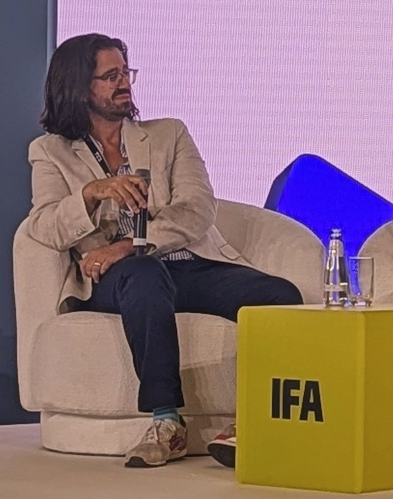

The Second Chair
Three months, fixed fee
I sit next to you in the meetings that matter, then tell you what you missed. Between them I'm on your phone, so you can be wrong out loud with me before you have to be right in the room.
I work with founders in media, creator and rights businesses when a decision has sat on the table too long. I've been the CPO and the interim CEO at SuperBam, and a founder on the acquired side when Meta bought Packagd. I know what the call costs, and I can help you make it cost less.
Ninety minutes, free. Then I read everything and write you an assessment.

No money moves until you've read what I think.
Ninety minutes, free. You walk me through what's in the way. I take notes.
Your calendar, your tools, your investor updates, the reports you actually run the company from. We sign a mutual NDA first.
A written read of what's in the way, what I'd do first, and what nobody's saying.
If the assessment is right, you sign it and we start. If it isn't, you keep it, and I'll tell you who to call instead.
In my experience, the hardest thing about running a business isn't managing P&L or personnel. It's managing emotions. As a leader, it's easy to get caught up in everybody else's needs while being unable to be detached and figure out what the business needs. That's where I come in.
My superpower is being able to take a realistic and detached view of what's happening in your world, and not just give you a straightforward, clear perspective on it, but help you ride those emotions to greater success. The problem isn't pushing them away. The problem is figuring out which ones to listen to. It's figuring out how to filter out the noise and turn your voice and their voices into one singular, unified voice and direction.
My job isn't to rally your team. It's not to make them feel good. It's not even necessarily to help them do their jobs better. My job is to help you diagnose the thing that's holding your business back and build a strategic and operationally sound plan to get past it.
The difference is whether I'm your counsel, or your counsel and your builder.
Three months, fixed fee
I sit next to you in the meetings that matter, then tell you what you missed. Between them I'm on your phone, so you can be wrong out loud with me before you have to be right in the room.
Six months, fixed fee plus equity
Everything in the Second Chair, plus I take a team and ship one thing. We write the goal down before we start, specific enough that we'll both know on day 180 whether it shipped.
Or bring one strategic question to a half-day or full-day workshop with your leadership team, and leave with a decision. Tell me the question.
Full time is a separate conversation, and a much shorter list of companies. If yours might be on it, say so.
Making the decision is half of it. The other half is whether the team is still standing to run it. When I stepped into the interim seat, there were no team exits during my tenure. That never shows up in a strategy memo, and it's the part I'm proudest of.
“He proposed and executed a full rebuild of our ingestion technology, and the resulting efficiencies and speed enabled a strategic shift in both our operations and our sales. Both teams could now go after large libraries, bringing in more revenue at higher margins.”
If you're not sure which shape fits, don't pick one. Tell me what's not working, and you'll hear within 48 hours whether I can help.